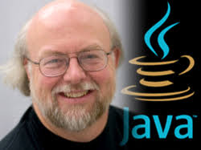

Введение
Джеймс Гослинг (англ. James Gosling; 19 мая 1955 года, Калгари, Канада) — автор объектно-ориентированного и кросс-платформенного языка программирования Java. Кроме того, является создателем оконной системы NeWS, Gosling Emacs, а также был одним из разработчиков Star Seven.
В 1977 году окончил университет Калгари со степенью бакалавра информатики, и в 1983 году получил степень доктора в университете Карнеги-Меллон. Тема диссертации „The Algebraic Manipulation of Constraints“.
С 1984 года работал в Sun Microsystems.
2 апреля 2010 года уволился из Sun Microsystems после того, как она была поглощена корпорацией Oracle. В качестве причины своего ухода Гослинг назвал «плохое отношение нового руководства к разработчикам Java», а также намерение Oracle понизить его зарплату.
С 28 марта 2011 года Джеймс Гослинг начал работать в Google.
В конце августа 2011 года в новостных лентах прошло сообщение, что Гослинг покинул интернет-гиганта и перешёл работать в стартап, небольшую фирму Liquid Robotics, которая занимается разработкой робототехники для исследования океана. Гослинг занимал должность главного архитектора программного обеспечения.
22 мая 2017 года уходит из Boeing Defense (бывшая Liquid Robotics) и начинает работать в Amazon Web Services.
В 2007 году награждён орденом Канады, высшей гражданской наградой Канады
В 2015 году удостоен медали фон Неймана от IEEE.
Одна из самых сложных вещей в жизни - это делать выбор. У меня было трудное время, когда я говорил «нет» ряду превосходных возможностей. @Джеймс Гослинг